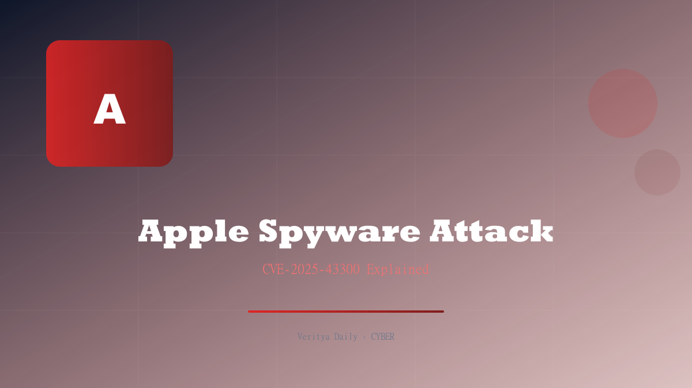

Apple's CVE-2025-43300: The Spyware Attack Targeting Fewer Than 200 People

Key Takeaways
- Apple patched CVE-2025-43300 — an out-of-bounds write in ImageIO with CVSS 8.8
- Chained with WhatsApp CVE-2025-55177 (CVSS 5.4) for spyware delivery
- Attack targeted fewer than 200 individuals — highly selective spyware operation
- Patches issued for iOS 18.6.2, iPadOS, and macOS
- Apple backported the fix to older supported devices
- Represents the growing trend of zero-click exploit chains via messaging apps
Understanding CVE-2025-43300: The ImageIO Vulnerability
At the heart of this spyware operation was CVE-2025-43300, a critical vulnerability in Apple's ImageIO framework. ImageIO is the system-level library responsible for parsing and rendering image files across iOS, iPadOS, and macOS. Every time your iPhone displays a JPEG, PNG, or HEIC file, ImageIO processes it.
The vulnerability was an out-of-bounds write — a memory corruption bug where data is written beyond the allocated buffer boundary. With a CVSS score of 8.8 (High), this flaw could be exploited to execute arbitrary code on the target device, potentially granting the attacker full control.
What makes ImageIO vulnerabilities particularly dangerous is their attack surface. Any application that processes images — Messages, Mail, WhatsApp, Telegram, Safari, even third-party apps — relies on ImageIO. An attacker doesn't need to compromise a specific app; they just need to get a malicious image file processed by any app that uses the system image framework.
| CVE | Component | CVSS | Type |
|---|---|---|---|
| CVE-2025-43300 | Apple ImageIO | 8.8 | Out-of-bounds write |
| CVE-2025-55177 | 5.4 | Media processing flaw |
The Exploit Chain: WhatsApp + ImageIO
The spyware operation used a two-stage exploit chain combining a WhatsApp vulnerability with the ImageIO flaw. Here's how it likely worked:
Stage 1: WhatsApp CVE-2025-55177 (CVSS 5.4) — The initial entry point was through WhatsApp's media handling. When a specially crafted media file was sent to a target's WhatsApp account, the vulnerability in WhatsApp's media processing pipeline allowed the malicious payload to reach the system's ImageIO framework without user interaction.
Stage 2: Apple CVE-2025-43300 (CVSS 8.8) — Once the malicious file reached ImageIO, the out-of-bounds write vulnerability was triggered during image parsing. This allowed the attacker to achieve code execution on the device, installing spyware that could access messages, calls, camera, microphone, and stored data.
This is a textbook zero-click exploit chain: the target receives a message, their phone processes a media file automatically, and spyware is installed — all without a single tap.
The brilliance of this chain lies in its use of trusted pathways. WhatsApp is one of the most widely used messaging apps globally, and media files flow through it constantly. A malicious media file hidden among billions of legitimate images and videos is extraordinarily difficult to detect — both for the user and for security systems.
Who Were the Targets?
Apple disclosed that the attack targeted fewer than 200 individuals. This is a hallmark of a targeted spyware operation, not a mass exploitation campaign. The small number of targets suggests:
- Nation-state involvement: The resources required to develop a multi-stage zero-click exploit chain typically exceed those of criminal groups
- High-value targets: The 200 individuals likely include journalists, activists, politicians, dissidents, or business leaders
- Commercial spyware: The operation may have used a commercial spyware platform like NSO Group's Pegasus or a similar tool
- Selective deployment: Exploit chains of this sophistication are expensive — each deployment costs hundreds of thousands of dollars
Apple's threat notification system alerted affected users, informing them that they had been targeted in a mercenary spyware attack. The company has been increasingly transparent about these notifications, having sent multiple rounds of warnings to users in over 150 countries since 2021.
The targeting of fewer than 200 people might seem small, but each of those individuals may be critical to democratic institutions, press freedom, or human rights advocacy. The impact of compromising even a single journalist or opposition leader can be enormous.
Apple's Response: Patches and Backporting
Apple responded by issuing patches across its ecosystem:
- iOS 18.6.2 — Patched the ImageIO vulnerability for iPhone users
- iPadOS update — Same fix for iPad devices
- macOS update — Patched the ImageIO framework on Mac computers
Crucially, Apple backported the fix to older supported devices. This means that users who haven't upgraded to the latest iPhone or Mac still received the security patch — a practice that Apple has increasingly embraced as the lifespan of its devices extends.
Apple also worked with Meta (WhatsApp's parent company) to address CVE-2025-55177. The coordinated disclosure between the two companies ensured that both sides of the exploit chain were patched, preventing the spyware from reaching devices even if only one vulnerability was fixed.
Apple's threat intelligence team provided additional details about the attack in security advisories, helping the broader cybersecurity community understand the techniques used. This transparency is critical for developing better defenses against future exploit chains.
The Growing Threat of Messaging App Exploits
The CVE-2025-43300 exploit chain is part of a disturbing trend: messaging apps are increasingly being used as delivery mechanisms for spyware. The reasons are clear:
Messaging apps are always-on. WhatsApp, iMessage, Telegram, and Signal run continuously on users' devices, automatically processing incoming media. This creates a persistent attack surface that doesn't require any user action.
Media processing is complex. Modern image and video formats support complex features — EXIF metadata, color profiles, multiple layers, embedded fonts. Each feature is a potential vulnerability, and the libraries that parse these formats (like ImageIO) are massive codebases with inevitable bugs.
End-to-end encryption doesn't help. While E2E encryption protects message content in transit, it doesn't protect against malicious content processed on the device. A malicious image encrypted end-to-end still gets decrypted and processed on the recipient's phone.
The irony is brutal: end-to-end encryption ensures that only you and the spyware can see your messages. The encryption protects the attack from being detected by network monitoring.
Recent messaging app exploit timeline:
- 2019: WhatsApp CVE-2019-3568 — NSO Group Pegasus delivered via missed calls
- 2021: FORCEDENTRY — iMessage zero-click exploited to deploy Pegasus
- 2023: BLASTPASS — iMessage exploit chain bypassing Lockdown Mode
- 2025: CVE-2025-43300 + CVE-2025-55177 — WhatsApp + ImageIO chain
How to Protect Yourself from Targeted Spyware
If you might be a target of mercenary spyware — and in today's world, that includes anyone involved in journalism, activism, politics, or corporate leadership — here's what you should do:
- Update immediately: Install iOS 18.6.2, the latest iPadOS, and macOS updates. Don't delay security patches
- Enable Apple's Lockdown Mode: This drastically reduces the attack surface by disabling many automatic processing features
- Disable auto-media download: In WhatsApp settings, turn off automatic media downloading on cellular and Wi-Fi
- Use a secondary device: For high-risk individuals, consider using a separate device for sensitive communications
- Monitor Apple threat notifications: Take these seriously — they mean Apple has detected targeting against your account
- Use disappearing messages: Limit the window of opportunity for attackers by reducing message persistence
- Avoid opening unexpected media: While zero-click exploits don't require interaction, some attack chains still benefit from user action
- Regularly audit app permissions: Check which apps have access to your camera, microphone, and files
The CVE-2025-43300 spyware operation is a reminder that even the most secure consumer devices can be compromised by sophisticated, well-funded attackers. The targeting of fewer than 200 people doesn't make this a minor incident — it makes it a precision weapon. And precision weapons are the most dangerous kind.